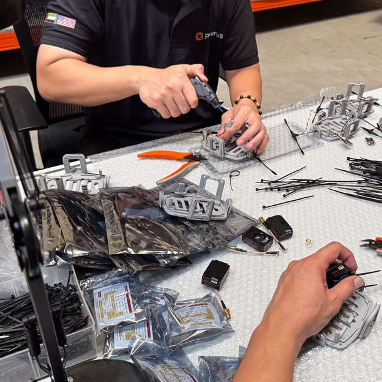
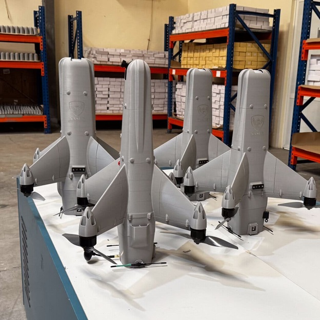
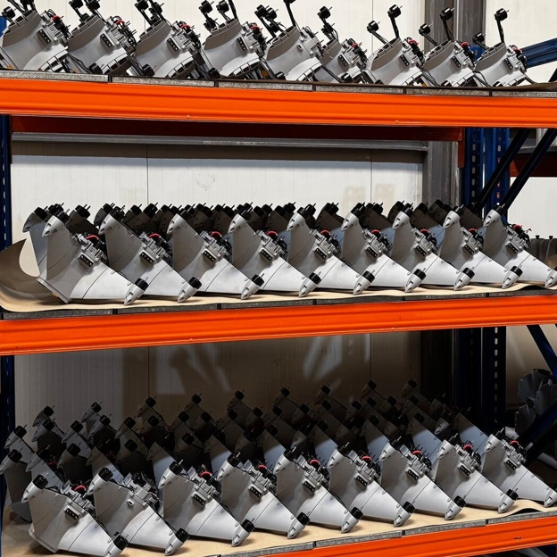
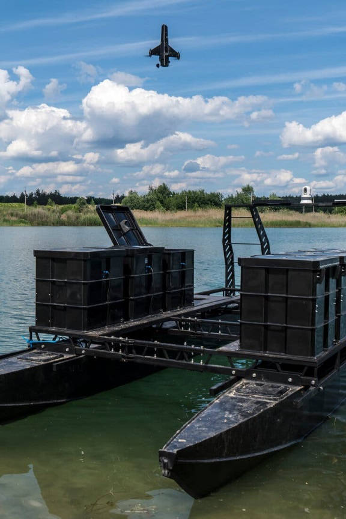
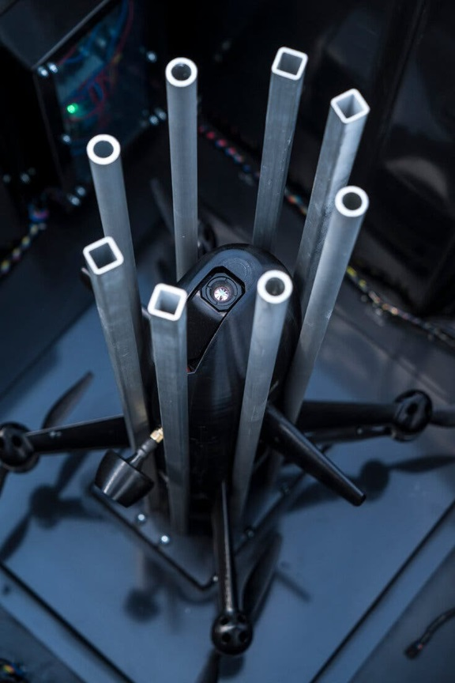

The U.S. Start-Up Making Low-Cost Interceptors for the Iran War
For Florida-based Powerus, becoming a global supplier of counterdrone technology has meant involving the Trumps, a golf course and a new way of doing business.



In a small warehouse in the United Arab Emirates, workers spend up to 12 hours a day snapping together 3-D printed components to make interceptors capable of knocking Iranian drones out of the sky at speeds of up to 200 miles per hour.
The facility, which came online last month, is being used by Powerus, a start-up in West Palm Beach, Fla., to make inexpensive interceptors.
The factory is the company’s first foray into the Middle East, and part of its plan to become a global supplier. Factories affiliated with Powerus make roughly 3,000 drone interceptors a month, a spokesman said, and the company is trying to establish a network of factories that will increase production to 15,000 a month worldwide by mid-2027. It would not publicly disclose the identities of its customers or contract manufacturer in the Emirates.
Achieving those numbers requires a complete shift in the way business is done in a defense industry known for being slow, bureaucratic and expensive. To meet the urgent demands of U.S.-allied countries that are under threat, Powerus has teamed up with local manufacturers in regions where the interceptors are needed. This allows the company to make them quickly in existing factories, rather than build new plants in the United States and export the weapons.
The Iran war has accelerated longstanding plans by the Emirates and other nations to make more weapons within their own borders. The civilian infrastructure of the Emirates was the most heavily targeted after the war started in February, as Iran sought to show its leverage over a symbol of global prosperity in the region. Now the need for more interceptors is critical as American-made stockpiles dwindle. More than 500 ballistic missiles and over 2,200 Iranian drones have been fired at targets in the Emirates. The attacks killed at least 15 people, injured hundreds, shut down an oil refinery and destroyed two Amazon data centers.
Interceptors are like small missiles, designed to crash into and destroy airborne threats before they reach their targets. The interceptor that Powerus developed, called Guardian, costs about $5,000 and is based on a Ukrainian design that was effective against Russian Shahed drones.
Powerus designed the Guardians to be relatively simple to assemble, as pieces snap together like Legos, and use off-the-shelf microchips and GPS location modules. They can’t intercept ballistic missiles, as Lockheed Martin’s PAC-3 interceptors can, but Shahed drones are the most common form of attack by Iran.


Powerus provided an Emirati contract manufacturer with the training, components and software needed to assemble interceptors for a customer in the Middle East, a setup designed for speed, said Michael Sinensky, co-founder and executive vice president of marketing for Powerus.
The factory’s workers, who are mostly Filipino and Chinese, make roughly 30 interceptors a day, with a goal of ramping up to 100 soon.
The company said last week that it had signed a commercial contract worth $22 million to protect oil and gas infrastructure in the Middle East. In addition, it has teamed up with a defense company near Mumbai to make interceptors in India.
As the Trump administration pressures suppliers to deliver weapons more quickly, even the largest defense companies are moving toward a model of co-production and less complicated systems. Lockheed Martin, for example, which typically makes weapons in U.S. factories and ships them abroad to government-approved customers, said in July that it would produce a lower-cost interceptor in Europe with European partners. And while the weapon would cost about $2 million — about half as much as the PAC-3, its best-known model — it isn’t expected to be tested until 2028.
Brett Velicovich, chief operating officer of Powerus, said the whole industry was trending toward the company’s business model.
“When the largest defense contractor in the world builds PAC-3 in partnership with European manufacturers, that’s the industry acknowledging what the last four years demonstrated: You cannot supply a modern conflict from a single continent or facility,” he said. “Production has to sit close to where it’s needed.”
Powerus isn’t the only American company building interceptors in the Emirates. In October, Raytheon announced a partnership to build its Coyote interceptors there. The estimated cost is $126,500 per interceptor, according to a report by the Center for a New American Security, a Washington think tank.
And Powerus will have additional competition on price. Neros, a start-up in Torrance, Calif., is developing an interceptor drone called Bandit, with the most basic model costing about $5,000, a spokeswoman said.
The booming business of war
Shortly after the Iran war began, Powerus announced an unusual merger with a publicly traded golf course operator, Aureus Greenway Holdings, in a deal brokered by an investment firm with ties to Donald Trump Jr. and Eric Trump, President Trump’s two oldest sons.
The golf course operator would become a wholly owned subsidiary of Powerus, a company spokesman said. The deal was brokered by Dominari Securities, an investment firm owned by Dominari Holdings, which counts the two Trump brothers as shareholders and advisory board members.
“We don’t care about politics — we want to save lives,” Mr. Sinensky said. “We appreciate the investments that they made into a vehicle that invested into us.”
Still, Powerus has issued a number of announcements involving the Trumps or their associates. Keith Kellogg, a retired lieutenant general who served last year as the White House senior adviser to President Trump, joined the company’s advisory board. In June, Unusual Machines, a Florida-based drone component maker that has Donald Trump Jr. on its advisory board, invested $30 million. And this month, the company signed a contract worth up to $90 million to provide interceptors to the Air Force.
The seeds of Powerus date back to 2022 when Russia invaded Ukraine. Mr. Sinensky, who owned WeShield, a company that gathered medical supplies globally during the Covid-19 pandemic, traveled to Ukraine to deliver medical kits with his business partner, Roman Vinfeld, who spoke the language. The two men had been friends since high school.
“We saw firsthand the start of the drone wars,” Mr. Sinensky said. “Our warehouse of humanitarian supplies got destroyed.”
While staying in a safe house in Lviv, the pair met Mr. Velicovich, an Army Special Operations veteran.
Mr. Sinensky began hosting American firms that sent their drones to Ukraine for testing. Mr. Velicovich vetted them and found them to be subpar, he said. The three formed Powerus alongside Andrew Fox, who is chief executive, and Ziv Marom to help Americans and their allies prepare for a new era of drone warfare.
Powerus sought out partners in Ukraine with battle-tested technology and licensed it. It also acquired other drone companies, including Tandem Defense, which designed modular drones that could be snapped together, and Kaizen Aerospace, which was founded by Mr. Marom and makes drones that can lift up to 1,000 pounds of cargo and fly autonomously.
Powerus began producing drones and Guardian interceptors in factories in North Carolina and California for the U.S. military. But Guardians only partly address munitions shortages since they are designed for midsize drones, and countries will still need higher-end interceptors to take down missiles.
“They are complements, not substitutes, for the PAC-3,” said Stacie Pettyjohn, a senior fellow and director of the defense program at the Center for a New American Security. She added that Iran was most likely rebuilding its stockpile of missiles and might soon get Geran-3s — jet-powered Shaheds designed by Russia that fly much faster than the original version.
“They will be moving toward the types of salvos that Russia is throwing at Ukraine,” Ms. Pettyjohn said of Iran. “That is what we have to plan to defend against.”
Nonetheless, Guardians are already being produced in the region. Mr. Velicovich demonstrated the Guardian’s abilities to a buyer in Dubai weeks after the war started, and soon had a contract. At the time, the Emirates was using PAC-3 interceptors that cost millions of dollars each to destroy $40,000 Shahed drones — an unsustainable strategy, said Albert Vidal, a research associate at the International Institute for Strategic Studies, who is based in the region.
“Goal No. 1 is to have a sovereign capability,” Mr. Vidal said. “The reaction in the U.A.E. is: ‘We’re going to continue buying as much as we can from the U.S., but we will also buy from other players and we are also going to produce stuff at home.’”